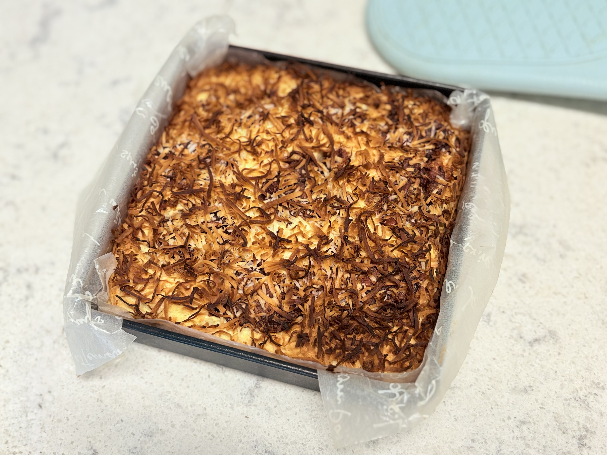

달콤한 전통,
찰진 위로
전통 단팥의 묵직한 달콤함과 찹쌀의 쫄깃함.
코코넛의 이국적인 향기가 더해진 프리미엄 찹쌀구움바입니다.

정성으로 가득 채운
단면의 미학
빈틈없이 꽉 찬 단팥의 밀도와 찹쌀의 찰기.
하나만으로도 든든한 명절의 가장 정직한 선물입니다.

코코넛이 빚은
우아한 고소함
찹쌀의 쫀득함 끝에 남는 코코넛의 고소한 여운.
시간이 지나도 변치 않는 풍미를 위해 정성껏 구워냈습니다.